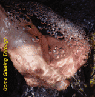

Come Shining Through (2001)
Original folk, international folk and traditional gospel.
Debut of Russian folksinger Jamuna (Russian folk in Russian), True Believers, Ari,
Beverly (gospel), and Jasmine. Strong return performances from Cynthia, dandelion,
and Claudia (Chilean folk in Spanish).
Dowload entire album as zip
Dowload album art
-
Let Me Be Your Lyre
(1:47)
© 1994 Cynthia R. Crossen
- Vocals, Guitars: Jesse, Cynthia
-
Haunting of the Heart
(5:16)
© 1998 John Stash
- Vocal, Guitar: Johnny
- Mandolin: Paul
-
Long Road, inspired Those Were the Days
(3:36)
Russian folk song
-
No Fool
(2:26)
© 2000 Judi Chatowsky
- Vocals, Guitars: Judi, Jim
-
Time Is Moving Me
(3:17)
© 2000 Jesse Crossen, Andy Greenberg, Andreas Hung
- Vocals: Jesse, Cynthia
- Guitar: Andy
- Slide Banjo: Jesse
-
Una Aventura
(4:03)
© 2001 Claudia Lopez Bascu�an
-
Oh Freedom
(3:51)
traditional African American
-
Earth Is Holy
(4:18)
© 1980 Cynthia R. Crossen
- Vocals: Cynthia, Lea, Sarbaga
- Guitar: Cynthia
- Bass: Paul
-
Come Shining Through
(1:07)
© 2001 Cynthia R. Crossen
-
Where I Am
(5:37)
© 1998 John Stash
- Guitar, Vocal, Harmonica: Johnny
-
Didn't We Have Fun
(2:06)
© 2001 Jesse Crossen
-
So Wonderful Growing Up With You
(3:18)
© 2000 Ari Picker
-
"Papirosy"
(2:47)
WWI Russian folk song
-
Don't Forget the Family Prayer
(3:31)
Traditional Gospel
-
Come Shining Through, Jim's reprise
(1:44)
© 2001 Cynthia R. Crossen
-
Absolute Stillness
(5:22)
© 1994 Jasmine Girard
-
Alphonsina
(5:22)
Violetta Parra / Patrimonio Nacional de Chile
- Vocals: Claudia, Myrna
- Guitar: Claudia
-
Candyland
(2:36)
© 2000 Ari Picker
-
With Me Still
(4:49)
© 1999 Judi Chatowsky
- Vocals, Guitars: Judi, Jim
-
Gentle Wind
(2:30)
© 1998 Larry Bohs
-
Lovingkindness
(5:07)
© 1996 Cynthia R. Crossen
- Vocals: Cynthia, Lea, Claudia, Sarbaga, Donovan, Jesse
- Guitar: Cynthia
- Bass: Paul
Artists
- Andy Greenburg - Guitar
- Ari Picker - Vocal, Guitar
- Beverly McLean - Vocal
- Claudia Lopez Bascu�an and Myrna Bascu�an Lopez - Vocal, Guitar
- Cynthia Rylander Crossen - Vocal, Guitar
- dandelion john (Johnny, John Stash) - Vocal, Guitar, Harmonica
- Donovan Zimmerman - Drums, Vocal
- Jamuna (Джемма Халид "Djemma Khalid") - Vocal, Guitar
- Jasmine Girard - Vocal, Guitar
- Jesse Crossen - Vocal, Guitar, Slide Banjo
- Larry Bohs - Vocal, Guitar
- Lea Clayton - Harmony Vocal
- Paul Ford - Bass, Mandolin
- Sarbaga Falk - Vocal
- True Believers (Judi Chatowsky and Jim Magaw) - Vocal, Guitar (Judi and Jim)
Come Shining Through was recorded and produced by Ken Crossen
Mixed and mastered by Jesse and Ken Crossen
"Haunting of the Heart" and "Where I Am" were recorded by John Stash and Paul Ford
"Gentle Wind" was recorded and mixed by George Stetten (stetten.com)
Photos, Cover/CD Design and Art by Ken Crossen